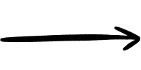

BASES (FUNDAMENTOS)
Para evoluir no desenho, é preciso dominar os pilares que dão realismo e estrutura à obra.
LUZ E SOMBRA:
A técnica de aplicar diferentes tons para criar a ilusão de volume e profundidade em objetos bidimensionais.


ANATOMIA:
O estudo das proporções e estruturas (humanas ou animais), garantindo que o desenho tenha coerência e equilíbrio.

PERSPECTIVA:
O método de representar a distância e o espaço em uma superfície plana, criando o efeito de tridimensionalidade.